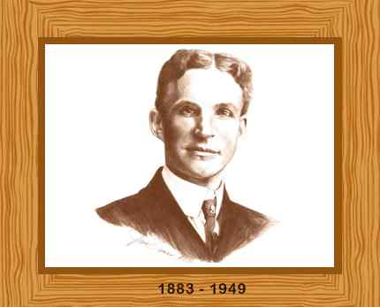

Henry Ford was an American industrialist and inventor who formulated the assembly-line methods for automobile manufacturing, which led to faster production at lower costs. One of the most popular figures in history, Ford’s inspired the Industrial Revolution in the United States and worldwide.
Born on a farm in Greenfield Township, Michigan, Henry Ford had two brothers and two sisters. His father gave him a pocket watch when he was fifteen. Even at such a young age, Ford reassembled it and gained the reputation of a watch repairman. When his mother died in 1876, he refused to take over the family farm. Ford became an apprentice machinist in 1879. He also worked for Westinghouse company as a steam engine repairman.
Henry Ford built his first steam engine when he was only fifteen. He constructed his first internal combustion engine in 1893 and his first automobile in 1896. Ford changed the way automobiles were designed and built, bringing in the assembly-line factories for the mass production of vehicles that later led to lower prices, and therefore caused a storm in automobile ownership throughout the United States and abroad. He created his first gasoline-driven buggy or Quadricycle in 1893 which was entirely self-propelled.
Ford founded the Ford Motor Company in 1903 and was president of the company from 1906 to 1919. He resumed his post from 1943 to 1945. The gross sales of his company exceeded 250,000 in 1914. The total sales went over 450.000 1916. Ford became the vice president of the Society of Automotive Engineers when it was established in 1905. The institute was formed to systematize automotive parts in the United States.
Henry Ford fell ill and went into retirement in 1945. He died of a cerebral hemorrhage two years later in 1947. Ford was buried in the Ford Cemetery in Detroit. He was 83 years old.
Go to top